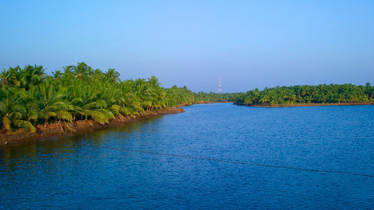
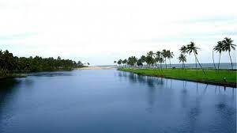

Bekal Fort
Built almost 300 years ago, Bekal Fort endears itself to its visitors by its amazing location as well as its historical legacy. Visitors get panoramic views of the Arabian Sea from its observation tower.

Nileswaram
Nileswaram once served as the cultural center of Kasaragod district, besides being home to the Nileshar Rajas, who are believed to have come from Kozhikode nearly 600 years ago.

Ananthapura Lake Temple
Ananthapura Lake Temple, standing in the middle of a lake, traces its origins to the ninth century. Dedicated to Lord Vishnu, it’s the only lake temple in Kerala.

Kappil Beach
Kappil Beach, One can get mesmeric views of the Arabian Sea from the Kodi cliff near the beach. Situated about 6km from Bekal Fort, this beach is one of the cleanest and unpolluted beaches of Kerala.